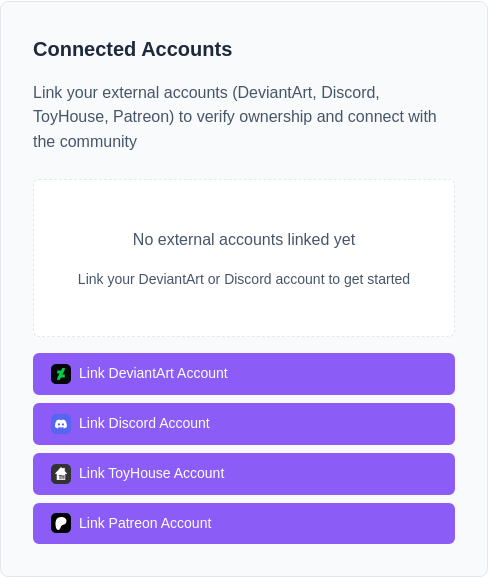
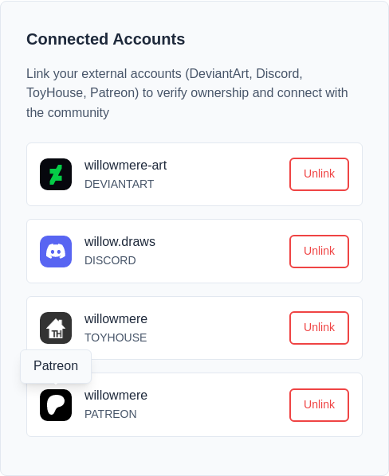
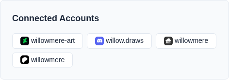

Your accounts elsewhere, connected to the one here
Most people arrive at CharDB with a history somewhere else — a DeviantArt gallery, a Toyhouse profile, a Discord name the community already knows. Linking those accounts tells CharDB that they are you.
Four sites can be linked, one account each. Linking goes through the other site's own sign-in, so you never give CharDB a password for it.
Your gallery account
Where the community talks
Your character profiles
The account you support creators with
Linking lives in the Connected Accounts section of Edit Profile. There is one button for each site you have not linked yet; once a site is linked, its button goes away.

CharDB asks each site only who you are: your account and its name. It does not ask to read or post anything on your behalf, and keeps nothing from the sign-in beyond those two.
An account can belong to only one CharDB user. If the account you sign in with is already linked to someone else, the link is refused and nothing changes.
Each linked account is listed with its site's logo and the name it goes by there. Hover a logo to see which site it is.
Unlink removes the connection. Anything you already claimed through it stays yours; unlinking only stops CharDB treating that account as you from then on. To link a different account on the same site, unlink the old one first.

Your profile page lists your linked accounts too, as small badges under a Connected Accounts heading.
